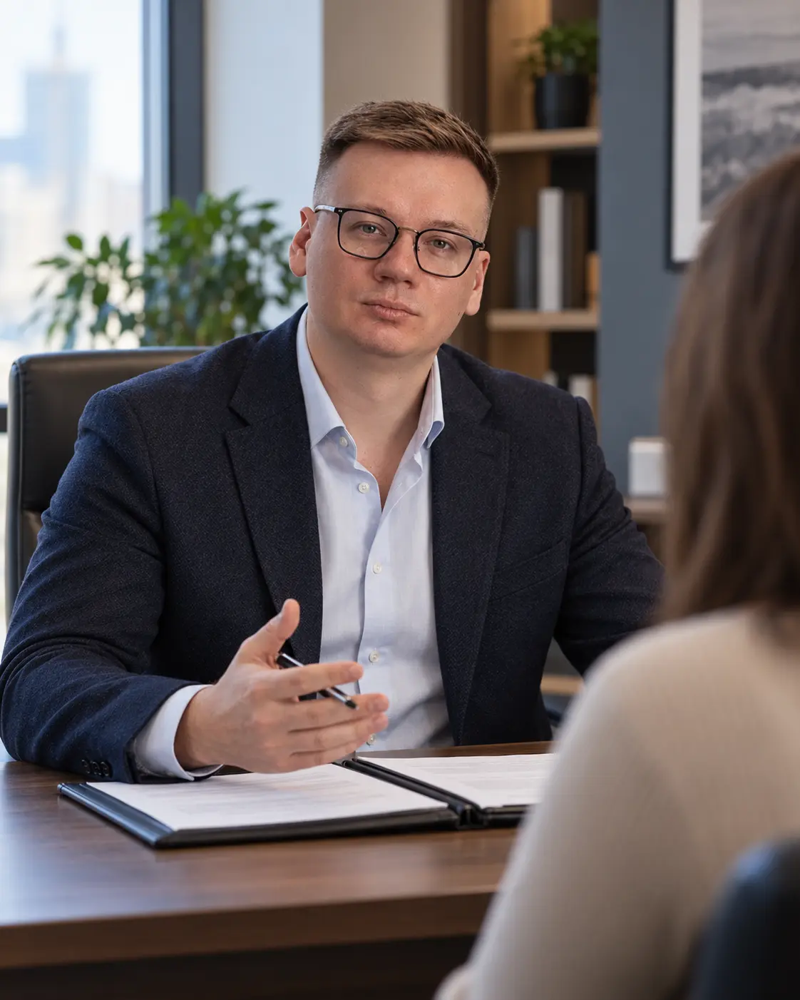

Договорная работа
Анализ и подготовка договоров, правок и протоколов разногласий с учётом реальной модели бизнеса.
Юридическая поддержка бизнеса
Команда ведёт текущие договорные и претензионные вопросы. Павел Машко подключается к сложным переговорам, судебной стратегии и ситуациям, где цена ошибки особенно высока.

Что берём на себя
Анализ и подготовка договоров, правок и протоколов разногласий с учётом реальной модели бизнеса.
Формируем позицию, готовим документы и ведём переговоры до того, как конфликт перерастёт в судебный процесс.
Подряд, поставка, аренда, взыскание задолженности и убытков, расторжение договоров и защита от требований.
Разбираем нестандартные ситуации собственника и предлагаем решение с понятными последствиями и следующим шагом.
Формат сотрудничества
Количество задач само по себе ничего не говорит об их сложности. Поэтому мы сначала оцениваем нагрузку, судебные риски и необходимый уровень участия руководителя практики.
Фиксируем, какие задачи входят в ежемесячное сопровождение.
Определяем сроки ответа и порядок постановки поручений.
Судебные проекты и крупные разовые задачи оцениваем отдельно.
Собственник понимает, кто отвечает за вопрос и на какой стадии находится работа.
Начать разговор
Мы оценим предполагаемую нагрузку и предложим формат, который не создаёт лишних расходов и действительно закрывает риски бизнеса.
Напишите Павлу Машко в Telegram или позвоните. Для первого разговора достаточно кратко описать сферу бизнеса и основные задачи.
Написать в Telegram +7 913 376-18-60